ECLIPSE
Volume 1 · Part 9 · Integration
Prologue
The Last Day
FRIDAY · 6:32 AM
A digital clock changes from 6:31 to 6:32, and Wandile’s bedroom stays exactly as quiet as it was a second ago.
On his desk, the Version Two pieces are laid out in carefully organised sections: the angular hooded mask, the reinforced gauntlets, the specialised boots, the communications system, the modular cape. Overnight, with Oracle checking every measurement, the drawings have turned into hardware. The original plans lie beside them, along with his notebook, open to the first page and its six headings.
- VISIBILITY.
- COMMUNICATION.
- MOVEMENT.
- EVIDENCE.
- ESCAPE ROUTES.
- RELIABILITY.
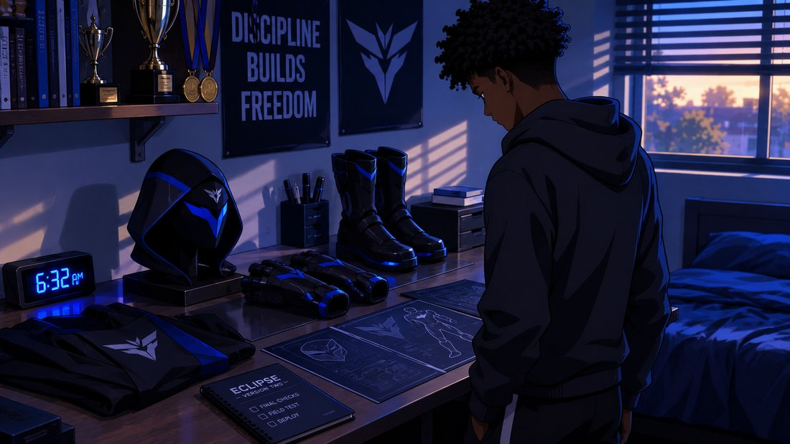
Wandile stands in front of the desk with his hands in his pockets, looking at all of it. He slept for roughly the length of a short film, and he feels exactly as well-rested as that sounds. His phone vibrates.
Wandile puts the phone down. Oracle takes that as an invitation.
“Your available working hours are limited.”
“I know.”
“You have several outstanding objectives.”
“I know.”
“Would you like me to list them?”
“No. I wrote them down myself.”
“Your confidence is noted. It has been filed under optimism.”
Wandile picks up his notebook. “Today, we finish.”
A short pause.
“Then we should begin.”
He looks towards the door.
Chapter 1
The Room Becomes a Base
FRIDAY · 7:05 AM
The concealed entrance opens, and Wandile steps into the hidden room.
It is still recognisably the space he discovered behind the storage shelving, but the transformation is well under way. The professional assessment and the approved work have been completed, quietly and under a great deal of confidentiality paperwork. Qualified tradespeople have finished the safety work, and the room is ready for its final fit-out.
A workbench has been installed along one wall. On every form, the room is described as a “private archive and workshop”, a phrase Oracle suggested because it is boring and technically true. Not one of the tradespeople asked why an archive needs this much ventilation. The electrical and ventilation work has been done and checked. The floor is clean, the walls are finished, and the lighting actually works, which is a significant step up from a single caged bulb. The room smells of fresh paint and concrete dust, which is the smell of a place that has been taken seriously.
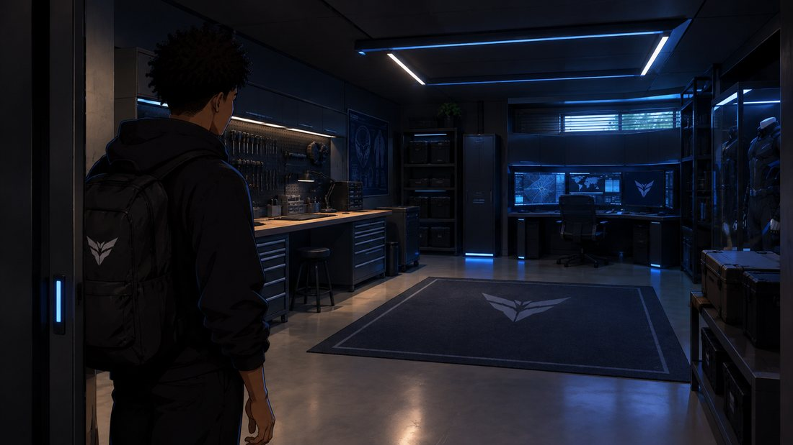
Wandile looks around. “Okay.”
He takes a few steps inside. “This is starting to look like something.”
“The room now meets the agreed requirements for its intended use,” says Oracle.
“You could sound a little more impressed.”
“I am reserving my assessment until the equipment has been installed.”
“Of course you are.”
He walks towards the workbench. A computer workstation waits to be connected. Secure storage units stand along the opposite wall. A dedicated section has been left for the suit and its individual components.
Wandile puts his notebook down on the workbench. “Computer station here. Equipment storage there. Suit section along that wall.”
“That matches the final layout.”
“And nothing gets left upstairs.”
“Your ordinary living space will remain separate from the project.”
Wandile glances back at the concealed entrance. “That’s important.”
He starts unpacking the equipment. The room is no longer an empty space with potential. It is becoming Eclipse’s headquarters.
Chapter 2
The Workstation
FRIDAY · 8:14 AM
The main workstation powers on. One monitor lights up, then another.
The central display shows a clean interface. Research folders, recorded images, maps and project files sit in separate sections, each in its proper place.
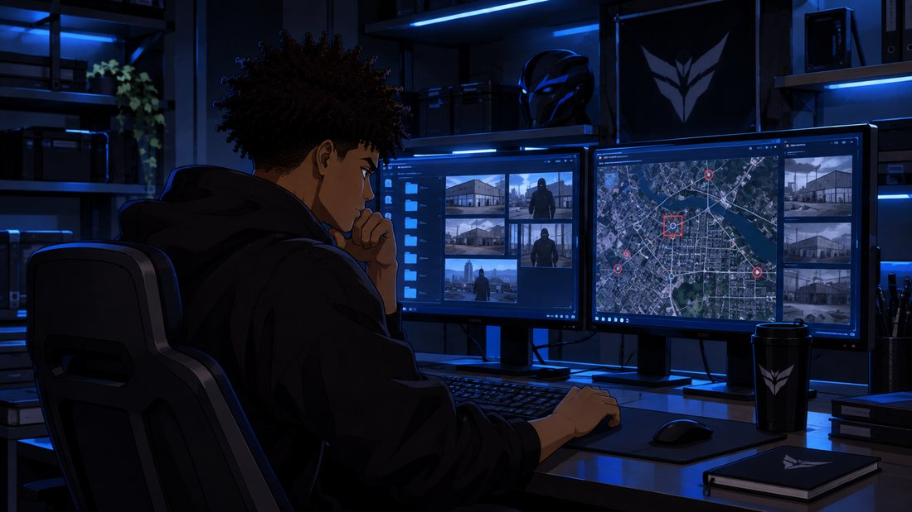
Wandile drops into the chair. “Oracle, status.”
“Main workstation online. Local storage connected. Project files accessible.”
“Communications?”
“The primary interface is available. The helmet connection remains to be integrated.”
He opens the system dashboard. “Let’s keep everything organised. Research on one side, equipment diagnostics on another. Nothing gets mixed with university work.”
“Separate environments have been configured.”
The folders are labelled with a precision that can only mean Oracle named them. Wandile renames one to something less formal. A second later, it changes back.
“Folder names matter.”
“They’re folders.”
“They are evidence-adjacent.”
He lets it go. He checks the research folder. The Meridian investigation is all there, sorted into dates, locations, photographs and records. Confirmed information is kept apart from unanswered questions.
“And the original files?”
“Preserved separately.”
“Good. I don’t want a system update accidentally changing the evidence.”
He opens a map. Known locations appear, each marked with its information.
“The map contains only locations supported by your recorded research.”
“No guessing.”
“Correct.”
Wandile leans back. “Now we’re getting somewhere.”
Chapter 3
The Suit
FRIDAY · 9:26 AM
A new section of the room is revealed.
The Version Two suit lies across a clean work surface in its first complete assembly. It is no longer just a sketch. The black-and-blue material has been put together into a full design, with reinforced sections and carefully fitted components.
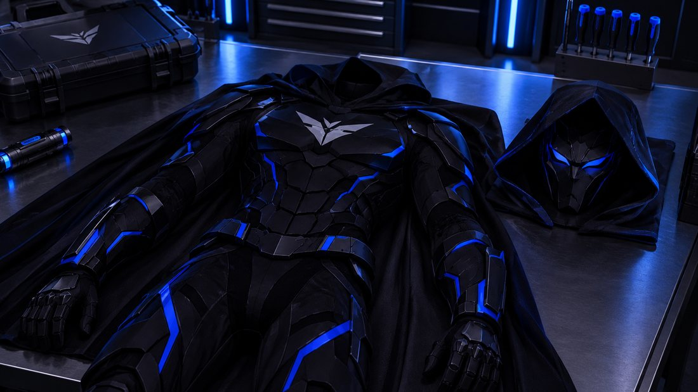
The hooded mask sits beside it. Its angular shape follows the design Wandile pinned above his desk, and the Eclipse emblem is built into the chest.
Wandile runs his hand over the material. “I don’t want this to look like a costume.”
“Its appearance is consistent with the design specifications.”
“It needs to move properly. I need to be able to turn, run, bend and move without fighting the suit.”
“Mobility and fit were prioritised during development.”
On a shelf of its own sits the cracked Version One guard, with a small label that Oracle insisted on printing: RETIRED WITH HONOURS.
He picks up a forearm guard. It is nothing like the cracked original. The revised design sits more securely, with a protective outer section and a better connection to the glove. He turns it over, checks the fit, and sets it down.
Next, the boots, built to support movement and protect his feet without making the suit unnecessarily heavy.
Wandile studies the whole arrangement. “Version One got me through the first night.”
“It also demonstrated several areas requiring improvement.”
“You really know how to remember the bad parts.”
“They are relevant to the design.”
He picks up the mask. The angular faceplate is dark, with blue detailing and the Eclipse identity built into it.
“This is the part that makes everything come together.”
“The mask interface is the most complex component.”
“Then let’s make sure it works.”
Chapter 4
Oracle, Integrated
FRIDAY · 10:43 AM
The mask rests on the workbench while Wandile sits at the workstation, reviewing the interface. A diagram shows the mask, the earpiece, the communications system and the main computer as connected parts.
“The helmet needs to do a few things well,” he says. “I don’t need a hundred features that don’t work.”
“The agreed functions are:”
- Communications.
- Navigation and mapping.
- Low-light assistance.
- Equipment status and warnings.
- Access to previously recorded information.
- Review of collected evidence.
“And it needs to be clear. I don’t want a screen full of information when I’m trying to concentrate.”
“The display will prioritise relevant information and allow you to access additional details when required.”
“Good.”
He puts on the mask. The display wakes up.
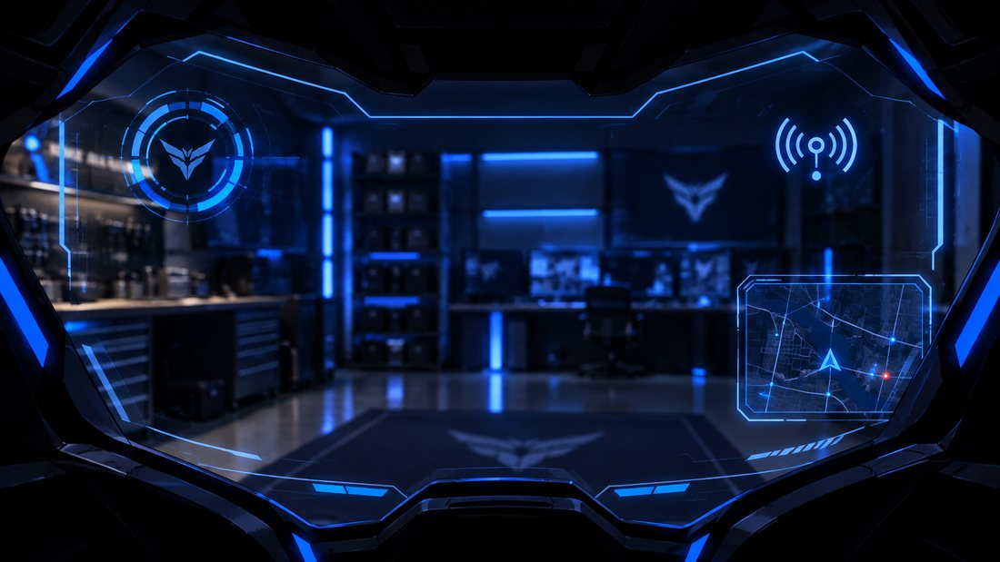
It is quiet inside the mask, so quiet that his own breathing becomes the loudest thing in the room. Then the interface settles into place: a status indicator, a communications symbol and a navigation display.
“Helmet connection established,” says Oracle.
Wandile turns his head. The display stays steady. “Navigation.”
A map appears. “Navigation interface available.”
“Show recorded locations.”
Several documented points light up.
“Open the depot image.”
The photograph appears in front of him. “Previously recorded evidence retrieved.”
He studies it for a moment. “Low-light assistance.”
The display shifts into a demonstration mode. He moves his head again. “Communications.”
“Audio connection is clear.”
“And equipment warnings?”
“The system can display the available equipment status and report detected faults. It cannot guarantee that a component will never fail.”
Wandile smiles. “There you are. I was wondering when you’d remind me about limitations.”
“It would be irresponsible not to.”
He takes the mask off. “All right. One more test.”
He sets it back on the workbench. “Oracle, if the helmet loses its connection, what happens?”
“The local equipment should remain independently usable where designed to do so. Communications-dependent functions may become unavailable. A loss of connection will be clearly indicated.”
“Good. I don’t want to depend on one system for everything.”
“That is consistent with your reliability requirements.”
Wandile looks at the display. For the first time, Oracle isn’t just speaking through a laptop. It lives inside the equipment he intends to use.
Chapter 5
The Gadgets
FRIDAY · 12:02 PM
A collection of equipment is laid out on the workbench, and Wandile moves from one item to the next, checking each against his inventory: the compact camera, the communications equipment, the portable light, the protective components, the utility storage, the helmet interface. Everything has its own place.
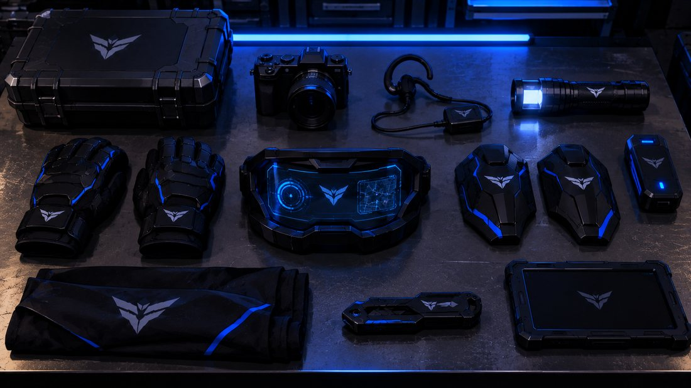
“Let’s go through the inventory.”
“Ready.”
“Communications.”
“Primary and backup communication options checked.”
“Camera.”
“Recording and playback tested.”
“Lighting.”
“Portable light operational.”
“Helmet.”
“Interface connected. Display functions available.”
“Storage.”
“Equipment compartments organised.”
He switches on the portable light and aims it at the wall. It is brighter than strictly necessary. “Portable light operational,” Oracle says again, in the tone of someone who would like him to stop pointing it at things.
He checks the remaining items. There is no enormous pile of weapons or pointless gadgets. The equipment is practical and compact, built around the way Wandile actually works.
He closes the inventory. “I don’t need to carry everything every time.”
“Correct. Equipment selection should depend on the circumstances.”
“Exactly.”
He looks over the full workbench. “I want to be prepared, not overloaded.”
“That is a reasonable distinction.”
Chapter 6
The Cape
FRIDAY · 1:16 PM
A separate work surface holds the modular cape system, the most ambitious part of the whole design.
Wandile studies the finished assembly. The cape is meant to stay compact when it isn’t needed, and to join the suit without getting in the way of ordinary movement. He checks its fit against the back of the suit.
“This was the part I wasn’t sure we’d get right.”
“It required additional development compared with the other components.”
“I know.”
He checks the attachment and its release mechanism, then runs a controlled demonstration. The cape opens into its full shape with a sound like a very expensive umbrella, then folds back to its stored position.
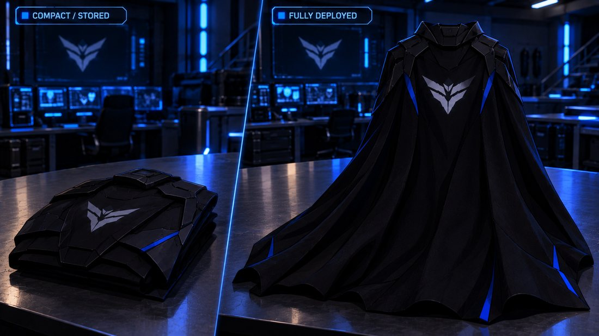
Wandile watches closely. “Again.”
The demonstration repeats.
He checks the result. “No catching. No interference with movement.”
“The test results are within the agreed operating parameters.”
“Good.”
He steps back. The cape completes the silhouette he first drew: the black-and-blue suit, the angular hooded mask, the reinforced gauntlets, the boots and the cape.
Wandile realises he is smiling like a kid with a new toy, and stops. Then he starts again.
The design is finally whole.
Chapter 7
The First Full System Test
FRIDAY · 2:34 PM
The room is ready. The workstation is active, the equipment is organised, and the suit hangs in its own space.
Wandile stands in front of the mirror, wearing the complete Eclipse suit.
The black-and-blue design is clean and fitted. The angular mask covers his face, with the hood framing it. The emblem sits across his chest.
He looks at himself. For a second, he doesn’t recognise the figure in the glass. Then he does, which is somehow worse. The reflection doesn’t blink, so he blinks twice to be sure.
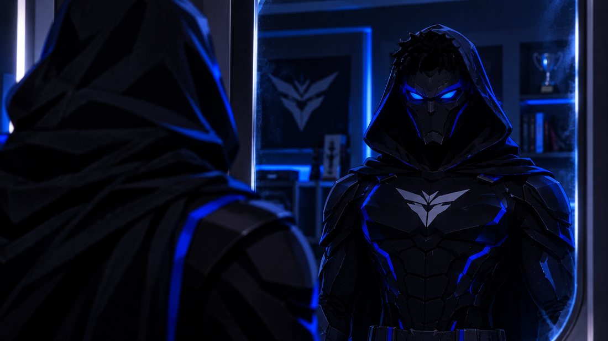
A moment passes.
“All right.”
“Ready when you are,” says Oracle.
He checks his gloves, then his forearm guards, then his boots. Then he moves through a series of controlled mobility checks. The suit moves with him. He turns, bends, tests his range of motion and checks the connections.
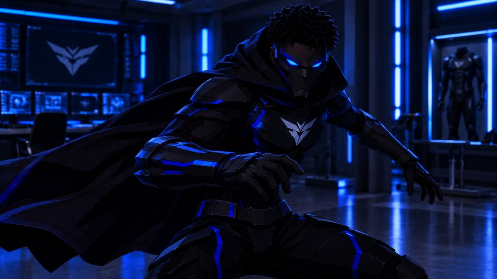
Nothing catches. Nothing feels loose.
“Movement check.”
“No equipment warnings detected.”
“Communications.”
“Clear.”
“Navigation.”
The display lights up. “Available.”
“Evidence access.”
A recorded image appears. “Available.”
“Low-light assistance.”
The interface changes to its demonstration setting. “Available.”
Wandile looks towards the mirror. For a moment, he doesn’t speak. He is looking at the result of weeks of planning, mistakes, redesigns and work.
“This is it.”
“The system is operational, subject to its stated limitations.”
“You always have to add that.”
“It remains true.”
Wandile takes off the mask. “I wouldn’t want you any other way.”
“That statement is difficult to interpret as a technical assessment.”
Wandile laughs. “Don’t worry about it.”
Chapter 8
The Final Checklist
FRIDAY · 3:46 PM
Wandile sits at the workstation. The final project checklist fills the screen, and he reads through every section.
He reads the list again, and one line makes him pause. “Sort of harmless.”
“That phrase has been flagged,” says Oracle.
“Flagged?”
“It is not a recognised safety classification.”
“It’s a joke.”
“I have reserved judgement on that.”
On the bench behind him sit the last two items he saved for the end: a case of smoke canisters and a wrist launcher for the grappling line.
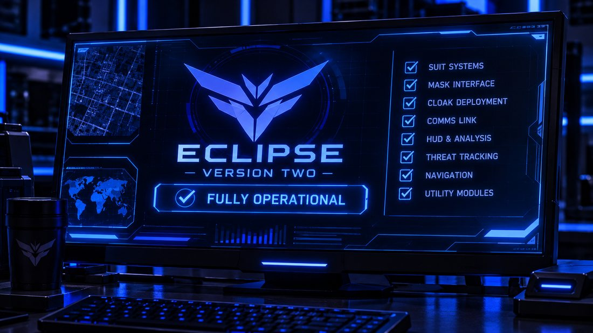
Then he looks at Oracle. “Anything missing?”
“The checklist is complete. The final system tests have also been completed.”
“Anything that needs to be fixed?”
“No outstanding faults have been identified during the completed tests.”
Wandile looks back at the screen. He moves the cursor to the final line.
PROJECT STATUS: COMPLETE.
He clicks. The display changes.
ECLIPSE — VERSION TWO
FULLY OPERATIONAL
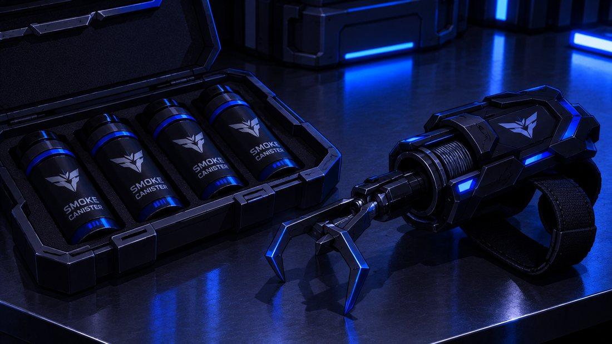
Wandile leans back and, for a moment, simply takes it in.
“We actually did it.”
“You did.”
“We.”
“I provided assistance.”
“And complained the entire time.”
“I would describe that as consistent feedback.”
Wandile laughs.
Chapter 9
The Room Nobody Knows About
FRIDAY · 4:28 PM
From the entrance, the completed lair looks like a different place.
The workstation glows along one wall. The equipment sits in its designated storage sections. The suit hangs in its place, complete and ready, and the mask rests on its stand. The workbench is clean. The concealed entrance remains discreet, and nothing about the ordinary storage area outside gives away what lies behind it.
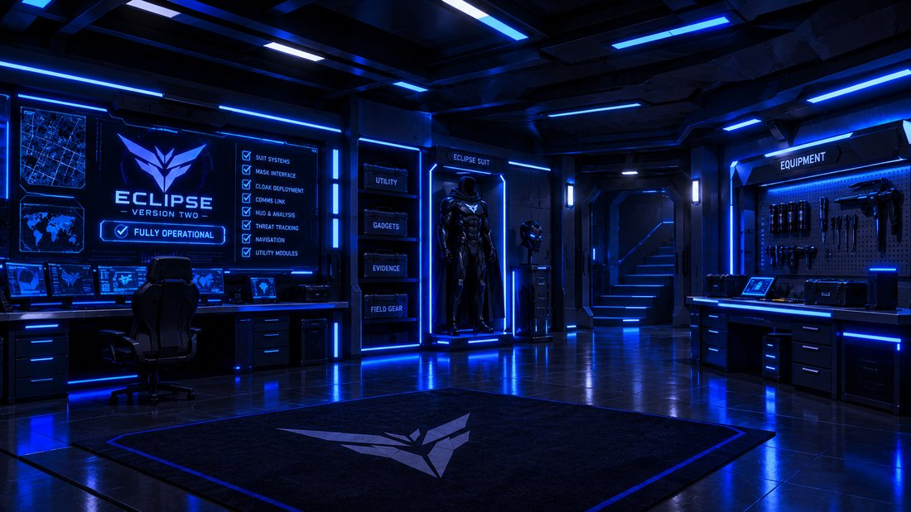
Wandile walks slowly through the room. He stops at the workstation. Then at the suit. Then at the entrance. He looks around one final time.
“No one knows this exists.”
“Correct.”
“And no one needs to.”
“Your privacy arrangements are in place.”
He looks at the suit again. “Later tonight, I can finally stop thinking about all this for a few hours.”
“The gathering is scheduled for this evening.”
“I know. I meant the rest of the day.”
He checks his phone. A message from Ethan lights up the screen, and then ten more arrive before he can read it. Every one of them is about food.
“He’s acting like he lives here.”
“His previous messages suggest a strong interest in your food arrangements.”
“That’s one way of putting it.”
He switches off the workstation display. The room stays ready, with everything where it belongs. The door closes behind him.
Final Page
Back to Normal
FRIDAY · 5:12 PM
Wandile walks into his bedroom and changes into ordinary clothes.
The suit is secured in the hidden room. The equipment is stored. The workstation is inactive. His bedroom looks like the bedroom of an ordinary university student, which is the entire point.
He straightens a few things on his desk. Where the mask and the gauntlets lay at dawn, there are now textbooks, a half-empty water bottle and a phone charger tangled around itself. It is the most ordinary desk in the world. He checks the time.
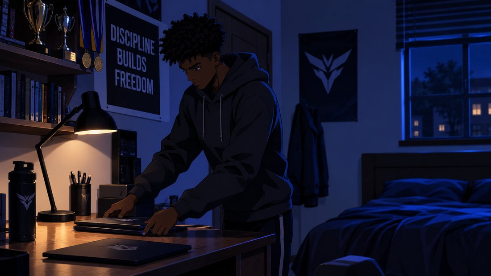
His phone lights up.
Wandile smiles.